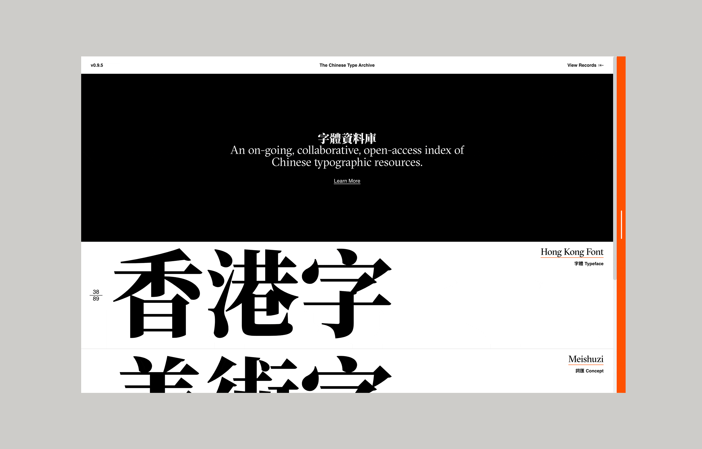
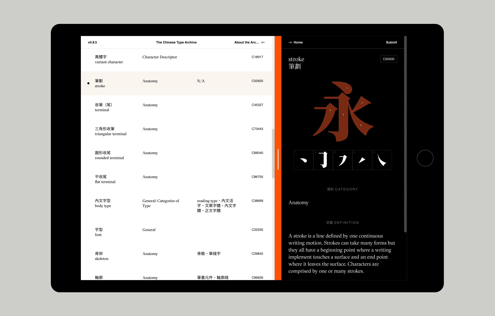
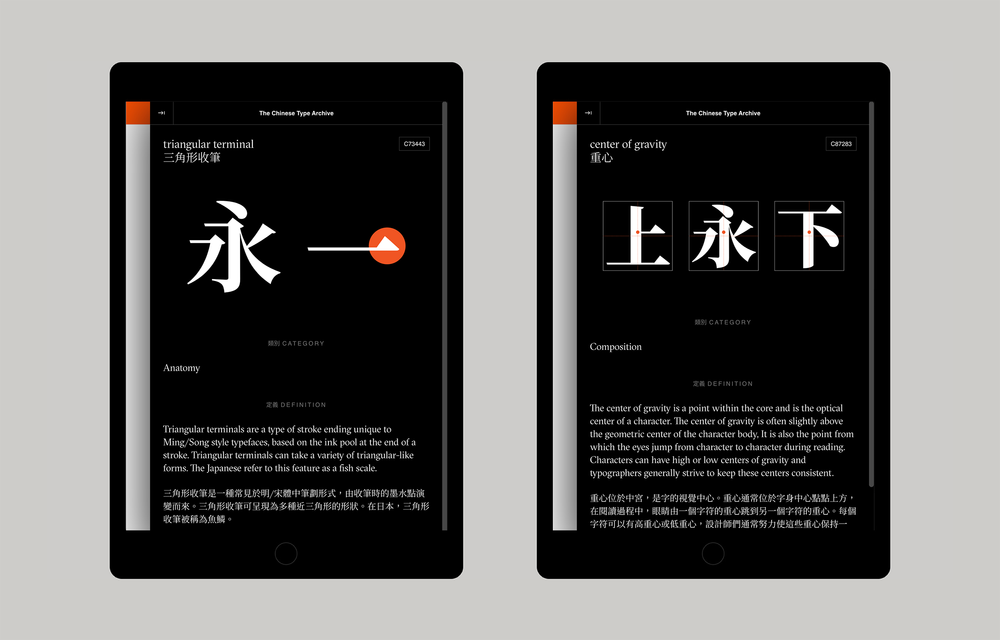

With Synoptic Office ↗

The archive details information on Chinese type design, and also includes links to resources in libraries and a growing database of evolving typographic concepts.

Project Director
Editors
Contributors
Mi Chen, Antoinette Chow, Karen Kwan, Jack Rieger, Dustin Tong, Yige Wang, Yifei Wang, and Haitong Zheng
With Support by
AIGA Design Educators Community Grant, Parsons School of Design